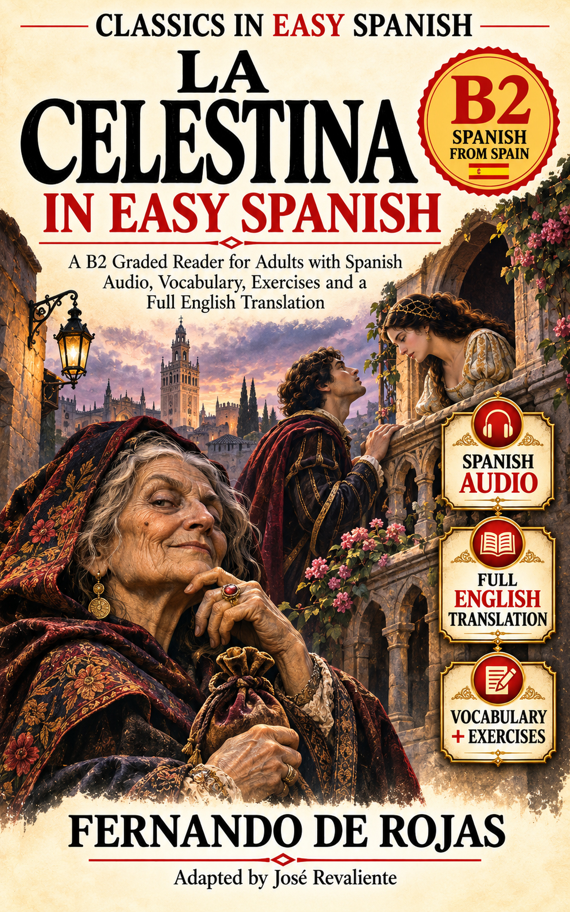

A Spanish classic for adult learners
La Celestina in Easy Spanish
Desire, secrecy, persuasion, and the price of an impossible bargain. Follow the story in Spanish and return to it through listening and active practice.
Fernando de Rojas
Adapted by José Revaliente
Listen chapter by chapter
Spanish Audio Library
30 publisher-provided audio references in the same chapter order as the book. Audio is streamed from Internet Archive, not stored in this GitHub repository.
Free · No registration
Study downloads
Vocabulary CSV
183 Story Words taken from the 30-chapter Spanish manuscript, with English meanings and chapter labels.
Download vocabulary CSVAnki / Flashcards
183 cards, with Front / Back / Tags columns. Import as Basic notes in Anki.
Download flashcards TSVConflict Timeline
Trace decisions and tensions across all 30 chapters. Contains spoilers.
Open timelineCharacter & Conflict Map
Track goals, allegiances, and how information travels between people.
Open character mapPrintable Reading Companion
A reading log for every chapter, notes, character reflections and a personal vocabulary bank.
Open / print reading companionUse the book and the resources together
Read, listen, understand
First preview the Story Words in the book. Then read the chapter without interruption, listen to its Spanish recording, answer the book's Spanish questions and revisit difficult expressions. Import selected words to Anki only when they help you.
B2 is an internal supported reading target, not an official certification. The complete English translation is contained in the edition, not on this companion page.